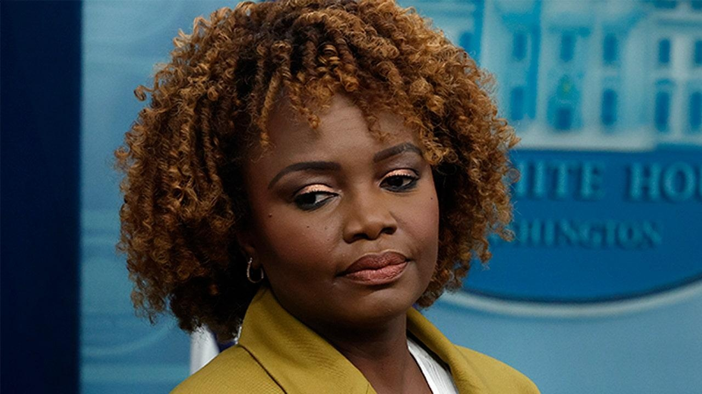

WATCH: Biden admin shifts blame as national debt reaches historic high of $34 trillionThe Biden administration spared no time in attempting to shift blame toward Republicans over America's national debt reaching a historic high of $34 trillion this week despite President Biden having been in office for nearly three full years. "If you look at that data, there's a trickle down debt. If you think about it, Republican tax cuts are responsible for about 90% of it — of the increase in the debt as a share of the economy over the last two decades, excluding emergency spending," White House press secretary Karine Jean-Pierre claimed during Wednesday's press briefing. Despite the new record high, Jean-Pierre argued Biden had taken action to lower the debt, including signing the Inflation Reduction Act, which some experts predicted would actually cost the U.S. more than originally projected, and "cracking down on wealthy tax cheats" through actions like growing the IRS. "His agenda would cut the deficit another $2.5 trillion by making the wealthy pay their fair share. So that is what the president has done. What we've seen on the other side is the complete opposite. What they've tried to do is continue to give a tax break to the millionaires and billionaires, and what they have actually put forward would add more than $3 trillion to the debt," she added. FOX Business reporter Edward Lawrence pressed Jean-Pierre on her claims, noting the length of time Biden had already been in office, as well as that the U.S. had added $10 billion per day to the national debt without a reduction. But she doubled down. "Republican tax cuts are responsible for 90%, 90% of the increase in the debt. 90%. That is something that Republicans are responsible for," Jean-Pierre responded. "[The president] put forth legislation like lowering the deficit by $1 trillion, and that's part of lowering prescription drug costs and cracking down on the wealthy tax cheats. That's what he's done," she said. "And meanwhile, yeah, you know what? The GOP, congressional Republicans, what they want to do is they want to continue with their ‘MAGAnomics.’ What they've proposed will add $3 trillion to the debt," she added. Last year, President Biden was scrutinized by several liberal fact-checkers for claiming his administration had reduced the budget deficit by $1.7 billion, a critical step in lowering the national debt. Some called the claim "misleading" and "lacking context." Although Biden was correct at the time that the annual federal deficit decreased from $3.1 trillion in fiscal year 2020 to $1.4 trillion in fiscal year 2022, translating to a $1.7 trillion drop, the fact-checkers noted Biden's fiscal policies were hardly the lone or leading factor in driving down the deficit. Biden repeated the same claim on numerous other occasions throughout 2023. In May, the nonpartisan Congressional Budget Office revealed that the federal government under President Biden had run a near-$1 trillion federal deficit in the "first seven months of fiscal year 2023." It found that in those months alone, the federal government had racked up $928,000,000,000. According to The Associated Press, the ballooning of the national debt in recent years was accelerated by heavy borrowing under both Biden's administration and former President Donald Trump's, followed by the surge of inflation that pushed up interest rates after the COVID-19 pandemic. |
 |